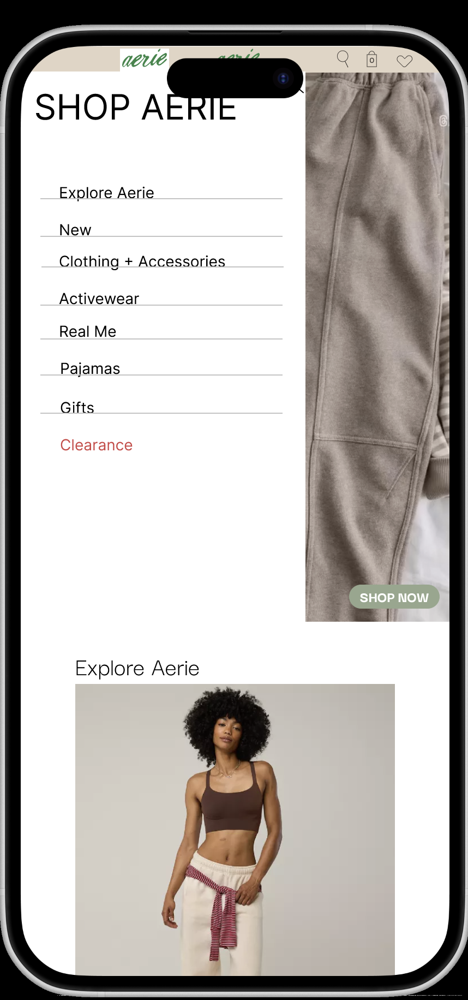
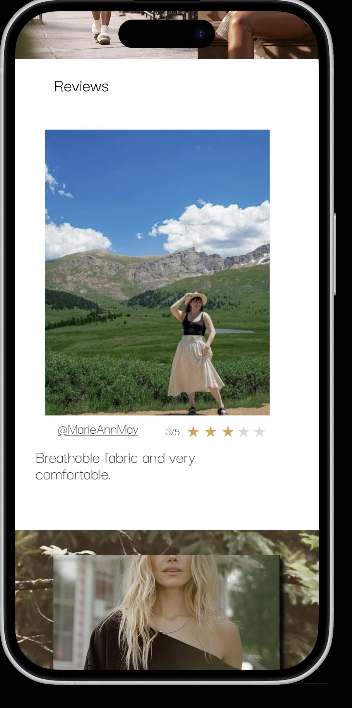
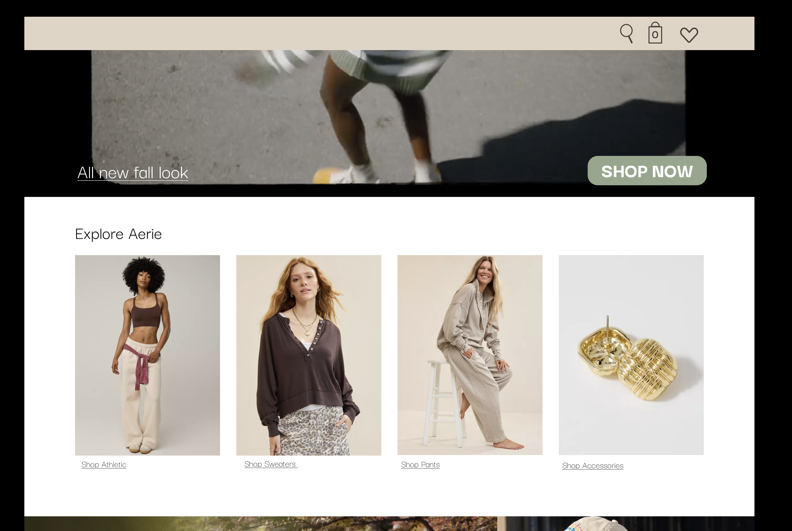
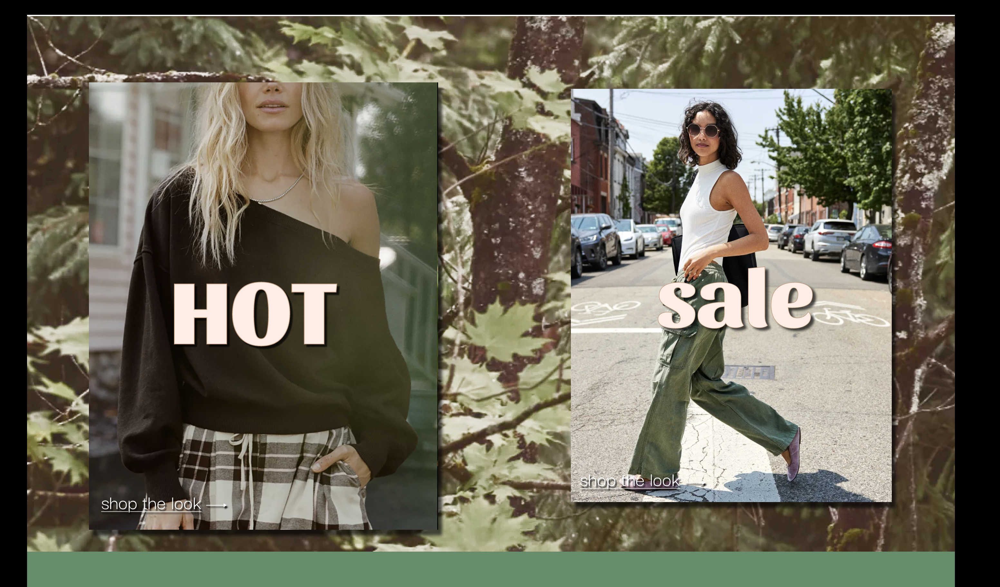
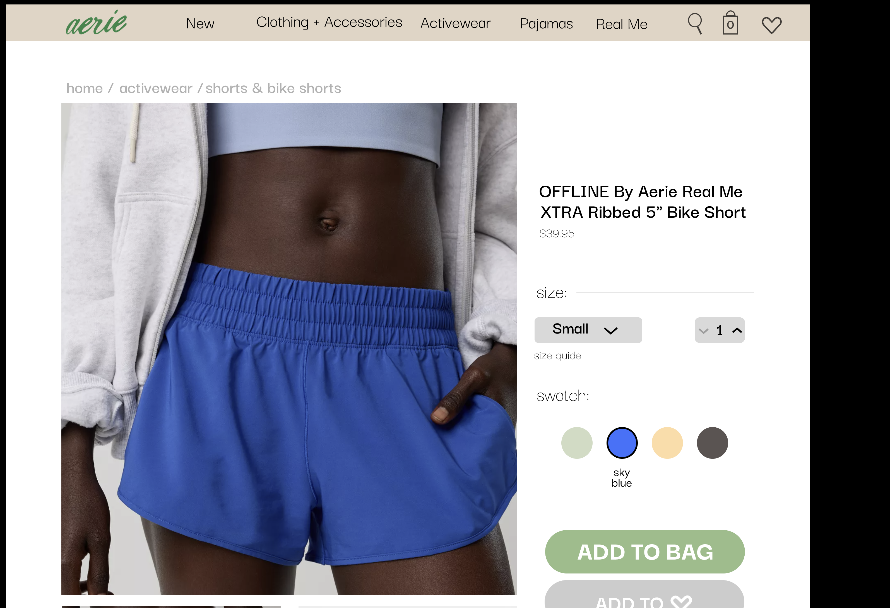
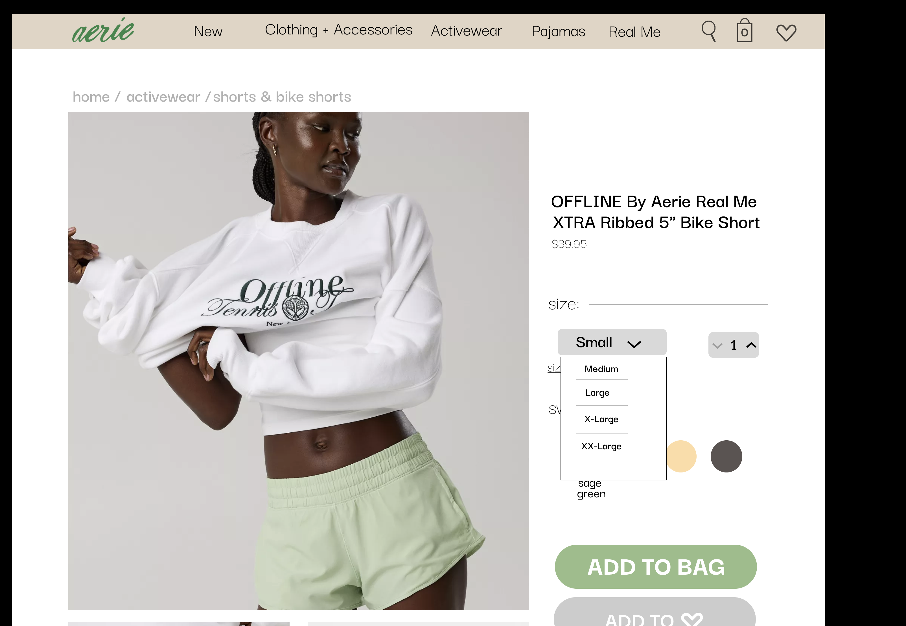
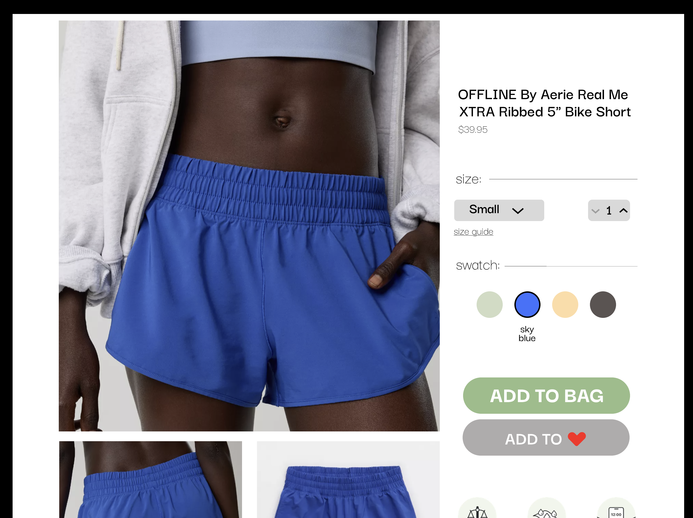

PROJECT 3
Aerie Redesign Prototype
A group UI/UX redesign of Aerie's online store, prototyped in Figma for desktop, tablet, and phone. Created in Fall 2025 by a team of three, the project focused on turning a busy shopping experience into a cleaner, more minimal one that is easier to browse.

Project Overview
Redesigning an online store to feel cleaner and easier to browse
This project was created for a Figma layout and prototyping assignment, where our group designed a responsive online store prototype for desktop, tablet, and phone. We chose to redesign Aerie's website with a modern, cohesive, and easy-to-use experience in mind.
We designed with a broad audience of roughly 20 to 50 in mind, and built the prototype in Figma with working interactions across the homepage and product pages.
Group Project & My Contribution
A team of three, with my focus on headers and navigation
Our group of three divided the work, but decisions were made together. We shared ideas, gave each other feedback, and made sure everyone understood how every part of the prototype was designed and built, including the prototyping itself, since we knew we could be asked about any section.
My main role was designing the header section and creating the drop-down menus for the product pages across the desktop, tablet, and phone versions. I also designed the header for the video section on the homepage and put together the hero video using clips from Aerie's website.
Prototype Walkthrough
A working prototype across the homepage and product page
On the homepage, the hero video sits beneath the header, the Explore Aerie images change as you hover over them, the HOT and sale panels pop out on hover, and the reviews can be scrolled through. On phone, the header opens into a full menu from the menu icon.
On the product page, users can change the size and quantity, switch between colours to see each version of the shorts, and add an item to their wishlist. Every button in the header, including the drop-down menus, is prototyped.




Goal
Turn a cluttered store into a clean, minimal experience
At the time of our project, Aerie's website felt busy, with a lot of elements competing for attention. Our goal was to simplify the layout and make browsing feel calmer and clearer.
To find a direction, we looked at other online stores, including Uniqlo and Everlane. Their clean, minimal approach influenced how we structured the pages and handled spacing.

Design Decisions
Simple navigation, minimal structure, and a responsive layout
For the navigation, I focused on a header that looked clean and organised and matched the brand style our group developed. The drop-down menus let users browse different categories without feeling overwhelmed.
Across the prototype, the clean and minimal approach guided our structure and spacing, and we designed for three screen sizes: desktop, tablet, and phone.


Feedback & Reflection
A clear concept, with room to refine the details
Feedback on the project described the concept as clear and relevant, with some originality. The visual design had a clear hierarchy and consistent elements, and the navigation and flow felt logical. Teamwork and communication were also noted as strengths.
There were areas to improve as well. Some minor refinements, such as alignment, were needed, and the prototype was only partially functional, including features like the navigation drop-downs. Looking back, this project helped me grow more confident in Figma, in designing for different screen sizes, and in thinking about how users interact with digital interfaces.
I'm proud of what our group created and how well we worked together to redesign Aerie's online store into something modern, cohesive, and easy to use.